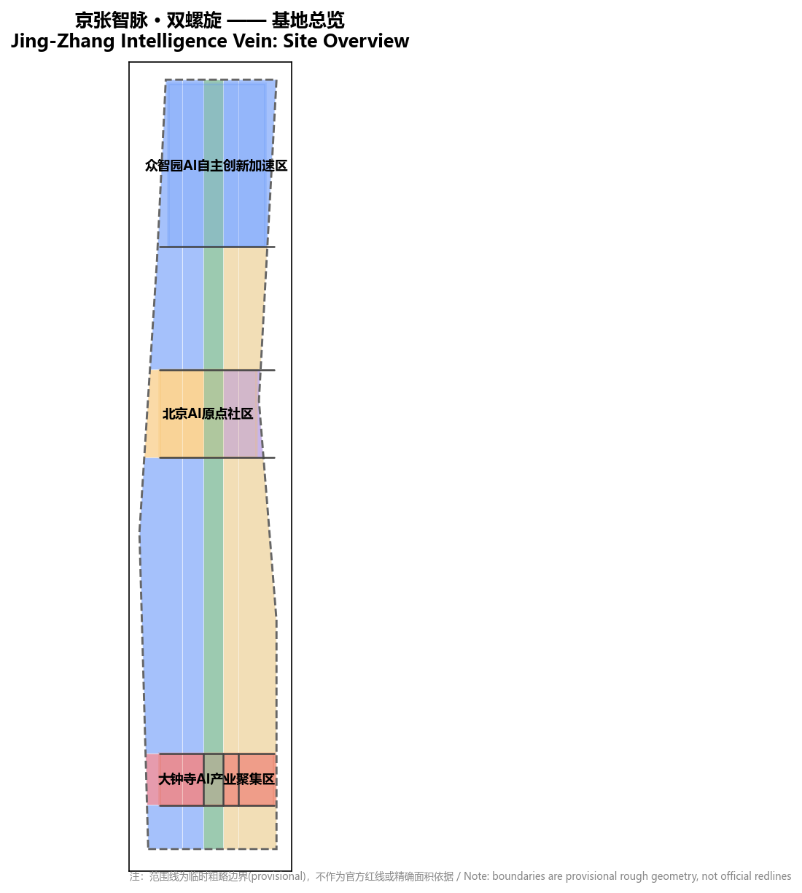
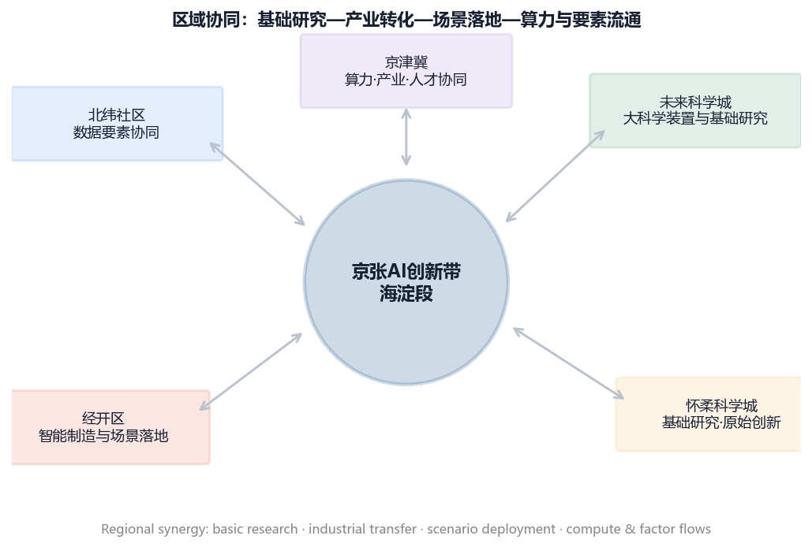
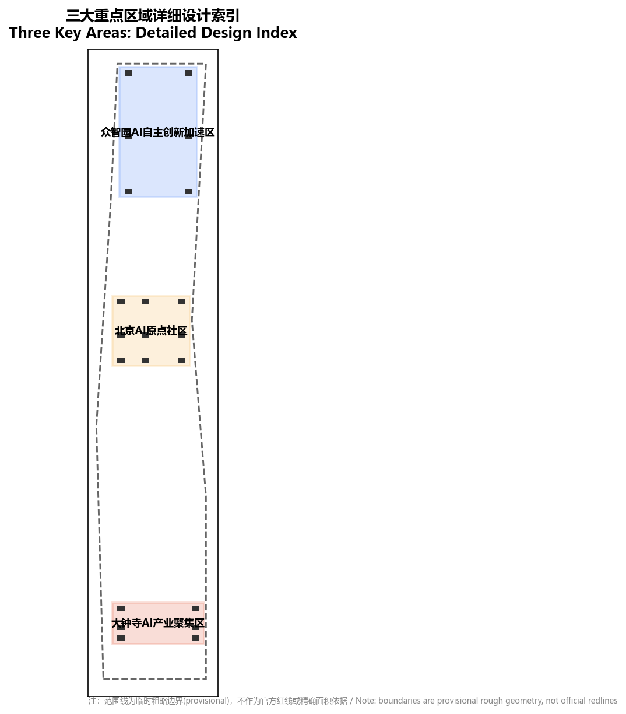
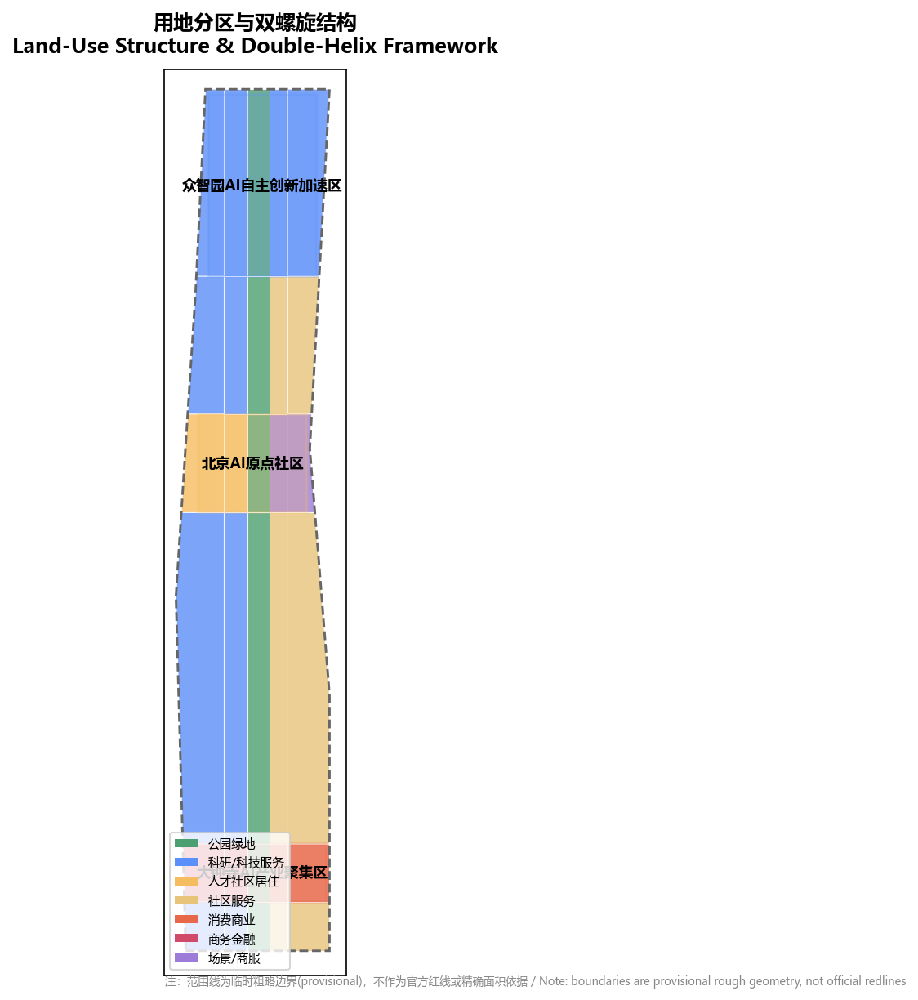
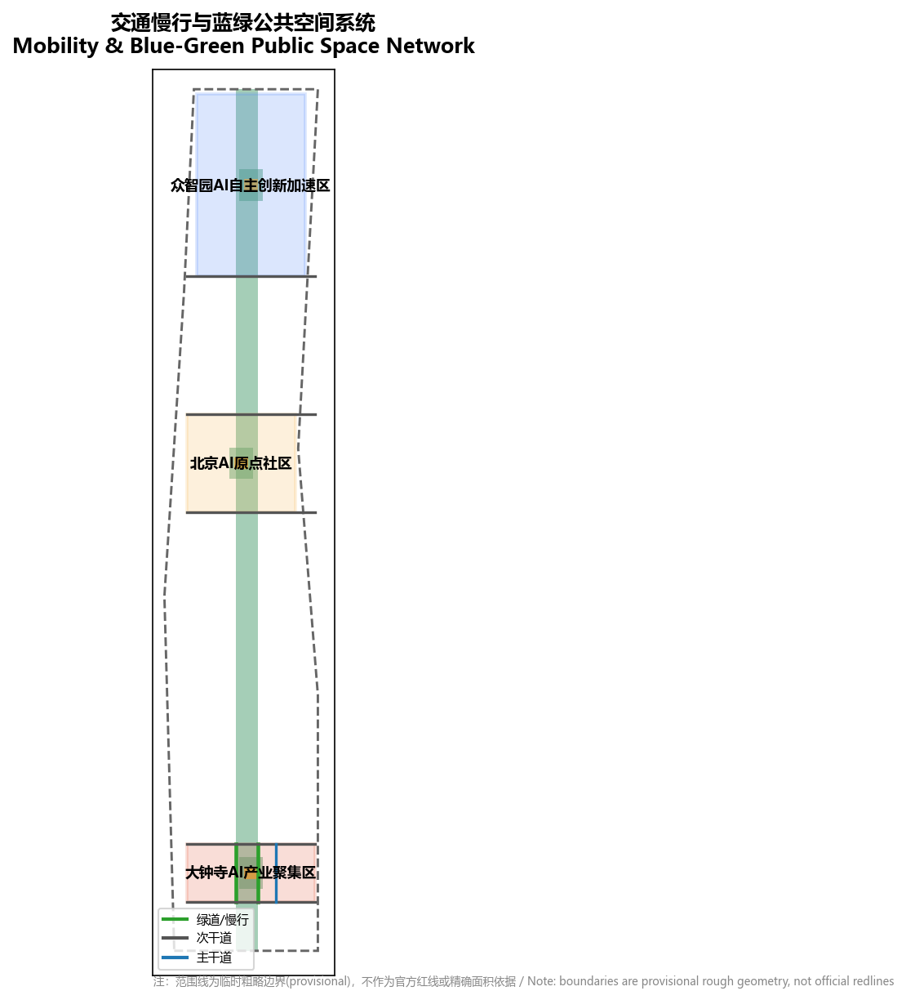
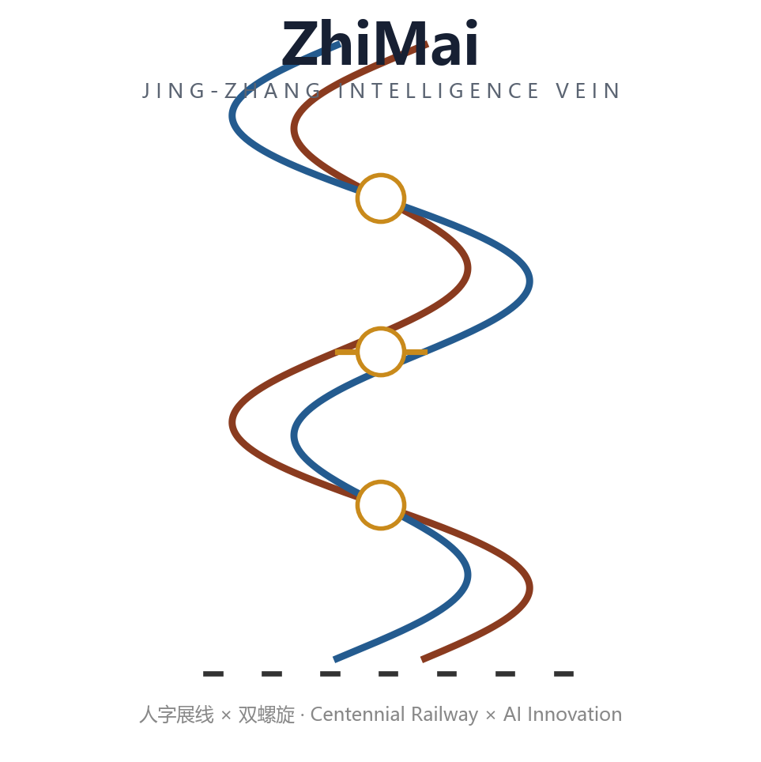
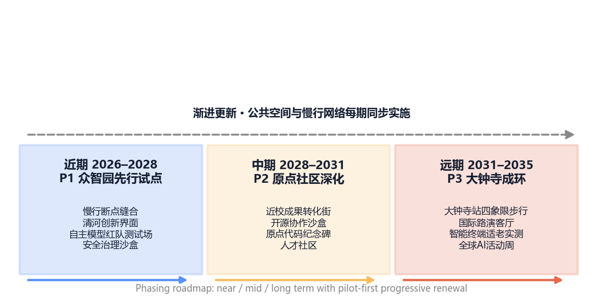
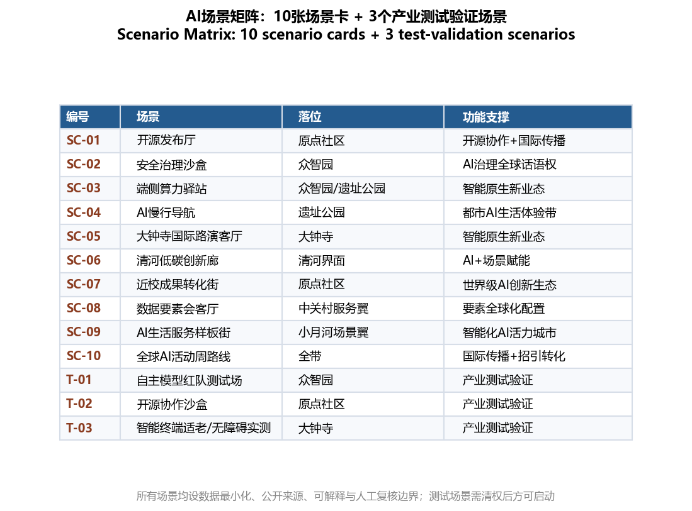
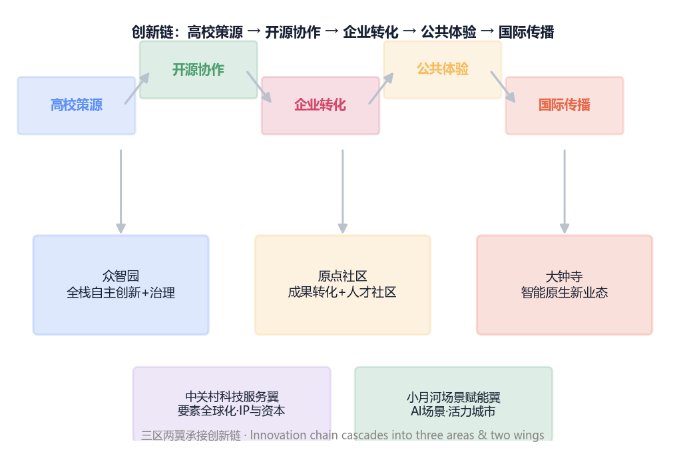
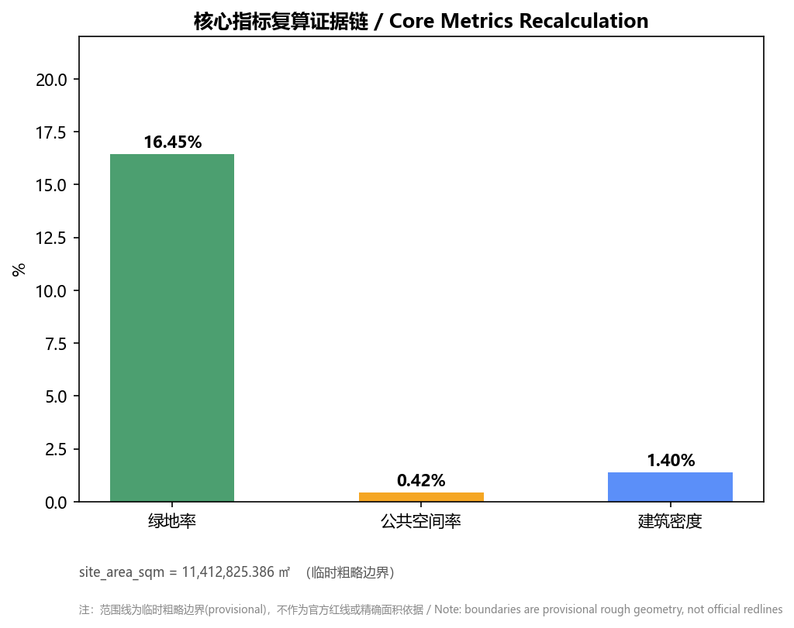

总览地图

本方案以京张遗址公园为中央绿轴，将百年京张铁路文化基因与AI融合创新基因编织为双螺旋，三区两翼沿廊道协同生长。所有范围线为临时粗略边界。
三层范围
三层范围：统筹研究范围（约43.6k㎡）、总体设计范围（约11.4k㎡）、重点区域范围（约368.4公顷）。总体设计范围采用临时粗略替代边界，待官方红线发布后重算。

区域协同按「带内两翼 × 带外三轴」组织：向北沿G6与上地、西二旗互动，向东南经学院路高校走廊与海淀核心区流通，向西跨小月河与回龙观、永丰职住互济。
重点区域

三大重点区域自北向南：众智园AI自主创新加速区、北京AI原点社区、大钟寺AI产业聚集区；两翼为中关村科技服务翼与小月河场景赋能翼。
用地分区

中央为京张遗址公园活力带（公园绿地1401），西侧以科研与科技服务（0802）为主，东侧以生活服务与场景（0904）为主，重点区按定位落位商务金融（0902）与消费商业（0901）。
交通慢行
沿遗址公园设置南北向慢行绿道，横向次干道串联三区，东部布置城市主干道与轨道接驳，实现东西缝合、南北贯通。
蓝绿公共空间

蓝绿系统以清河/小月河为脉络，中央绿轴连续贯通，三处重点区各设AI公共广场，形成可体验的公共空间网络。

风貌以「铁路遗产 × 智能未来」为母题，赭红文化色与科技蓝AI色构成双色基调，并按遗址段、创新段、生活段错落权重。
建筑
建筑以AI研发、人才公寓、智能原生办公为主体，集中布局于三大重点区内，建筑拆改留方案待现状权属与控规条件补齐后深化。
更新项目
更新项目按近期（众智园）、中期（原点社区）、远期（大钟寺）分期，每期配套公共空间与慢行网络同步实施。

AI 场景
形成不少于10张AI场景卡、3个产业测试验证场景与5类用户画像，覆盖AI+交通、医疗、教育、法律、生活服务与公共空间，均设隐私边界与人工复核机制。


生态要素以「创新链—空间链—运营链」三环咬合；场景按验证、体验、服务三档组织，无障碍与适老化作为横切人像贯穿全部公开场景。
核心指标

三项核心指标均由提交几何（site_boundary / green_space / public_space）在EPSG:4548下复算，与visual/index.html数值一致；范围线为临时粗略边界。
任务覆盖
公告任务1.3/1.4/1.5与面向智能体任务书agent.1—agent.6均已覆盖，详见compliance_matrix.json。
自检状态
已通过四项自检门：确定性校验、空间审查、视觉打包检查、专业证据审查（self_check.json）。
来源
主要来源：官方征集公告、面向智能体任务书、城市设计管理办法、控规编制审批办法、用地用海分类指南等（sources.json）。
假设
控规、道路红线、权属、市政与文保等控制条件待官方附件补齐；缺项记为待确认（assumptions.json）。